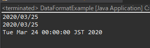

[Java] 日付フォーマット(SimpleDateFormat)を使う方法
こんにちは。明月です。
この投稿はJavaで日付フォーマットを使う方法に関する説明です。
以前、Javaで数字フォーマットに関して説明したことがあります。
link - [Java] 数字フォーマット(お金表示及び小数点以下表示)
その時には数字フォーマットのDecimalFormatを使いましたが、データフォーマットはDateformatを使います。
import java.text.DateFormat;
import java.text.SimpleDateFormat;
import java.util.Calendar;
import java.util.Date;
public class DataFormatExample {
// 実行関数
public static void main(String[] args) {
try {
// 日付形式をStringに変換、またはStringを日付形式に変換するフォーマットクラスだ。
DateFormat format = new SimpleDateFormat("yyyy/MM/dd");
// Calendar形式で日付を取得する。
// Date値を取得してStringに変換する。
String datestr = format.format(Calendar.getInstance().getTime());
// コンソール出力
System.out.println(datestr);
// DateオブジェクトからStringに変換する。
datestr = format.format(new Date());
// コンソール出力
System.out.println(datestr);
// String形式からDate形式に変換する。
Date date = format.parse("2020/03/24");
// コンソール出力
System.out.println(date);
} catch (Throwable e) {
e.printStackTrace();
}
}
}

Date形式からStringに変換、またはStringからDate形式に変換することはSimpleDateFormatクラスです。
SimpleDateFormatのフォーマットパターンは下記とおりになります。
link - https://docs.oracle.com/javase/8/docs/api/java/text/SimpleDateFormat.html
| 文字 | 日付及び時間コンポーネント | 表示 | 例 |
|---|---|---|---|
| G | Era designator | Text | AD |
| y | Year | Year | 1996; 96 |
| Y | Week year | Year | 2009; 09 |
| M | Month in year (context sensitive) | Month | July; Jul; 07 |
| L | Month in year (standalone form) | Month | July; Jul; 07 |
| w | Week in year | Number | 27 |
| W | Week in month | Number | 2 |
| D | Day in year | Number | 189 |
| d | Day in month | Number | 10 |
| F | Day of week in month | Number | 2 |
| E | Day name in week | Text | Tuesday; Tue |
| u | Day number of week (1 = Monday, ..., 7 = Sunday) | Number | 1 |
| a | Am/pm marker | Text | PM |
| H | Hour in day (0-23) | Number | 0 |
| k | Hour in day (1-24) | Number | 24 |
| K | Hour in am/pm (0-11) | Number | 0 |
| h | Hour in am/pm (1-12) | Number | 12 |
| m | Minute in hour | Number | 30 |
| s | Second in minute | Number | 55 |
| S | Millisecond | Number | 978 |
| z | Time zone | General time zone | Pacific Standard Time; PST; GMT-08:00 |
| Z | Time zone | RFC 822 time zone | -0800 |
| X | Time zone | ISO 8601 time zone | -08; -0800; -08:00 |
上のフォーマットパターンの例です。
| 日付及び時間パターン | 結果 |
|---|---|
| "yyyy.MM.dd G 'at' HH:mm:ss z" | 2001.07.04 AD at 12:08:56 PDT |
| "EEE, MMM d, ''yy" | Wed, Jul 4, '01 |
| "h:mm a" | 12:08 PM |
| "hh 'o''clock' a, zzzz" | 12 o'clock PM, Pacific Daylight Time |
| "K:mm a, z" | 0:08 PM, PDT |
| "yyyyy.MMMMM.dd GGG hh:mm aaa" | 02001.July.04 AD 12:08 PM |
| "EEE, d MMM yyyy HH:mm:ss Z" | Wed, 4 Jul 2001 12:08:56 -0700 |
| "yyMMddHHmmssZ" | 010704120856-0700 |
| "yyyy-MM-dd'T'HH:mm:ss.SSSZ" | 2001-07-04T12:08:56.235-0700 |
| "yyyy-MM-dd'T'HH:mm:ss.SSSXXX" | 2001-07-04T12:08:56.235-07:00 |
| "YYYY-'W'ww-u" | 2001-W27-3 |
JavaでDateクラスを取得する方法は二つがあります。
「Calendar.getInstance().getTime()」と「new Date」です。
一応、お勧めの方法はCalendarクラスを通ってgetTime関数で取得することです。
なぜなら、時間というオブジェクトはインスタンスを生成することを考えば合ってる話しになるし、間違っている話もなります。Systemで流れる時間はローカルシステムから取得するデータです。
そのデータをnewで割り当てして取得することは間違ってる概念だと思われます。でも、流れる時間で特定時間をオブジェクト化して取得することだと思えば、間違っていない概念です。
なのでJavaではDateクラスを「new」で生成することは無駄なメモリリソースだし、バグ発生の可能性が高いと判断するでしょう。
簡単に説明すると「new Date」の場合は特定な日付を生成することには使うし、現在の時間を取得する時にはCalendarを通って取得して使うという意味です。
link - https://stackoverflow.com/questions/20693131/difference-between-new-date-and-calendar-date/20693309
私も率直に言って詳しい差異まで知りません。ただJavaAPIから現在日付はCalendarから取得することをお勧めだというのでユーザの場合はAPI通りに設計することがバグ発生可能性を低くすることです。
ここまでJavaで日付フォーマットを使う方法に関する説明でした。
ご不明なところや間違いところがあればコメントしてください。
- [Java] Redisデータベースを接続して使い方(Jedisライブラリ)2022/02/16 18:13:17
- [Java] WebSocketでチャット履歴をローディングする方法2021/06/15 18:34:45
- [Java] WebSocketを利用してユーザ(サイト運用者)が他のユーザとチャットする方法2021/06/15 17:20:08
- [Java] HttpConnectionを利用してウェブページを取得する方法2020/05/20 23:53:24
- [Java] Jsoupを利用してXMLファイル(HTML)を扱う方法2020/05/19 19:32:21
- [Java] 日付フォーマット(SimpleDateFormat)を使う方法2020/03/25 00:36:53
- [Java] サーブレット(Servlet)の環境でファイルアップロード(プログレスバーでファイルアップロード状態を表示する方法)する方法2020/03/24 00:48:21
- [Java] Spring環境でファイルアップロード(プログレスバーでファイルアップロード状態を表示する方法)する方法2020/03/22 23:15:12
- [Java] FTPに接続してファイルをダウンロード、アップロードする方法(FTPClient)2020/03/20 02:44:36
- [Java] JSPのSpring環境でschedulerのcronを使う方法2020/03/18 00:24:32
- [Java] POIを利用してExcelを扱う方法2020/03/17 01:48:00
- [Java] PDFを出力する方法(itextpdf)2020/03/13 00:47:31
- [Java] ログライブラリ(log4j)を使う方法2020/03/12 00:54:39
- [Java] Redisデータベースを接続して使い方(Jedisライブラリ)2022/02/16 18:13:17
- [C#] Redisのデータベースを接続して使い方2022/02/15 18:46:09
- [CentOS] Redisデータベースをインストールする方法とコマンドを使い方2022/02/14 18:33:07
- [Design pattern] 3-6. ステートパターン(State pattern)2021/11/17 20:04:47
- [Design pattern] 3-5. メメントパターン(Memento pattern)2021/11/16 20:01:36
- [Design pattern] 3-4. イテレータパターン(Iterator pattern)2021/11/15 19:31:28
- [CentOS] Linux環境(CentOS)でCassandra(NoSQL DB)をインストールする方法(DBeaverブラウザでNoSQL使い方)2021/11/12 17:33:58
- [Design pattern] 3-3. コマンドパターン(Command pattern)2021/11/05 17:01:42
- [Window] apache-tomcatでロードバランシング(Load balancing)する方法とセッションクラスタリング（セッション共有）2021/11/05 16:58:45
- [Window] Apacheでmod_jkとmod_proxyの差異、apacheでtomcatのwebsocketのプロキシフォーワードする方法2021/11/05 16:55:05
- [PHP] Apache環境の同じホスト中でPHPとJava(Servlet)を同時に起動、運用する方法2021/11/05 16:52:04
- [C#] 61. ウィンドウフォーム(Window form)でスレッド(Thread)を使い方、クロススレッド問題解決2021/11/04 19:29:51
- [Design pattern] 3-2. 責任の連鎖パターン(Chain of responsibility pattern)2021/11/04 19:27:58
- [Design pattern] 3-1. ストラテジーパターン(Strategy pattern)2021/11/03 18:38:52
- [C#] 60. ウィンドウフォーム(Window form)のイベント設定する方法2021/11/02 21:18:08